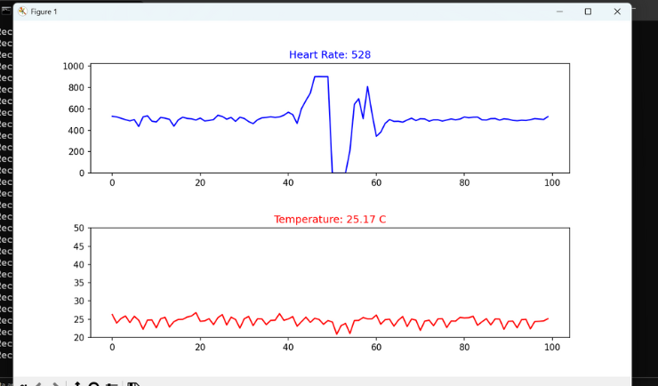

Wireless Hospital Management System

Fig 1: Hardware Setup

Fig 2: Software Interface
Project Overview
This project is designed to monitor patient health remotely using Arduino and Bluetooth technology. It collects real-time data like heart rate and temperature and sends it to a central Python dashboard.
Technologies Used
- Hardware: Arduino Uno, HC-05 Bluetooth Module, Pulse Sensor, LM35.
- Software: Python (Matplotlib for visualization), C++ (Arduino IDE).
Key Features
1. Real-time health monitoring.
2. Wireless data transmission.
3. Graphical representation of data using Python.
Code Snippet
import serial
import matplotlib.pyplot as plt
import matplotlib.animation as animation
from collections import deque
# Bluetooth Connection Setup
ser = serial.Serial(SERIAL_PORT, BAUD_RATE, timeout=1)
max_points = 100
pulse_data = deque([0] * max_points, maxlen=max_points)
temp_data = deque([0] * max_points, maxlen=max_points)
fig, (ax1, ax2) = plt.subplots(2, 1, figsize=(10, 8))
plt.subplots_adjust(hspace=0.5)
def animate(i):
# Reading data from Arduino via Bluetooth
line = ser.readline().decode('utf-8').strip()
if line:
parts = line.split(',')
if len(parts) == 2:
pulse_val = int(parts[0])
temp_val = float(parts[1])
pulse_data.append(pulse_val)
temp_data.append(temp_val)
# Real-time Plotting
# Pulse Graph
ax1.clear()
ax1.plot(pulse_data, color='blue')
ax1.set_title(f"Heart Rate: {pulse_val}", color='blue')
ax1.set_ylim(0, 1024)
# Temp Graph
ax2.clear()
ax2.plot(temp_data, color='red')
ax2.set_title(f"Temperature: {temp_val} C", color='red')
ax2.set_ylim(20, 50)
ani = animation.FuncAnimation(fig, animate, interval=50, cache_frame_data=False)
plt.show()
ser.close()